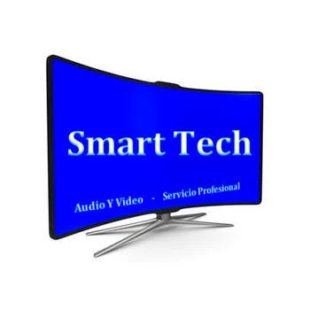

Nos especializamos en la reparación de televisores, parlantes y otros dispositivos de audio y video, trabajando con todas las marcas y modelos.
Nuestro equipo técnico está altamente capacitado para ofrecerte soluciones rápidas, confiables y con excelente atención.
Ofrecemos un servicio personalizado y a domicilio, lo que significa que no tendrás que mover tu equipo ni esperar días en un taller. Reparamos directamente en tu hogar, de forma segura, ágil y con garantía real de nuestro trabajo.
En Smart Tech, combinamos experiencia, eficiencia y calidad para que vuelvas a disfrutar de tus equipos como nuevos.
Otros trabajos y soluciones
que brindamos
Si tu equipo de audio o video como teatros en casa, bafles, minicomponentes, barras de sonido, parlantes, amplificadores o consolas de videojuegos presenta problemas – daños o fallas como no encienden – no cargan – no dan sonido – sonido distorsionado – se apagan solos – no se conectan por Bluetooth – puertos de entrada dañados – pantallas que no muestran imagen – problemas con HDMI o RCA – pantallas táctiles sin respuesta – luces encendidas pero sin función – fallas de conexión a internet o a redes locales, no dudes en comunicarte con nuestras líneas de atención al cliente.
¿Quienes Somos?
En Smart Tech, somos un equipo de profesionales apasionados por la tecnología y la reparación de equipos electrónicos. Nos especializamos en brindar soluciones técnicas para televisores, parlantes, teatros en casa, minicomponentes, consolas de videojuegos y más, con un enfoque en la calidad, la rapidez y la atención personalizada.
Contamos con más de 12 años de experiencia en el sector, lo que nos permite diagnosticar y reparar una amplia variedad de fallas, trabajando con las principales marcas del mercado. Nuestro compromiso es ayudarte a recuperar la funcionalidad de tus equipos sin que tengas que salir de casa.
Creemos que la confianza se gana con un buen servicio, por eso ofrecemos atención transparente, garantizada y a domicilio, para que vuelvas a disfrutar de tu tecnología como el primer día.